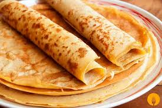

Panqueques (5 o 6)
Ingredientes
2 huevos
1 taza de harina multiuso
2 tazas de leche
Dulce de Leche (opcional pero muy recomendable)
Materiales necesarios
1 tazón grande
1 sartén antiadherente
Spray antiadherente para cocinar
1 plato
1 espátula de plástico
1 cuchara cucharón
1 Batidor
Instrucciones
Configuración
Tome su tazón y rompa los dos huevos en él, luego proceda a verter 1 taza de leche.
Mezcle lentamente con un batidor mientras introduce suavemente la taza de harina. Una vez que la taza de harina esté adentro
de el tazón, vierta la taza de leche restante. Mezcle bien, hasta que no haya más grupos de harina(grumos).
Aplique el spray antiadherente a la sartén y colóquelo en la estufa a fuego medio.
Cocinando
Toma tu cuchara y llénala hasta la mitad con la mezcla. Mantenga la sartén en el aire
mientras viertes tu mezcla en él, asegúrate de mover la sartén para esparcirla adecuadamente.
Coloque la mezcla en la estufa y espere hasta que los bordes comiencen a dorarse. Deslice lentamente su espátula debajo de
el panqueque hasta que quede suelto en la superficie. Luego, rápidamente dale la vuelta. La parte superior ahora debería ser dorada.
Déjelo cocinar por uno o dos minutos mientras revisa el fondo en busca de parches marrones. Una vez que comienzan los parches marrones
apareciendo, una vez más usa tu espátula para voltearla en un plato. A partir de ahora repites los mismos pasos hasta que te quedes sin mezcla.
Consejo profesional: aplique spray antiadherente cada dos panqueques
Comer
¡Hora de elegir tu relleno! Para aprovechar al máximo la experiencia, recomiendo encontrar Dulce de Leche o caramelo de leche.
Extienda su relleno sobre el panqueque. Hay dos formas comunes de doblar un panqueque. Puedes enrollarlo y comerlo como un túnel,
o puedes doblarlo por la mitad, luego por la mitad nuevamente, y comerlo como una pizza, primero la corteza.